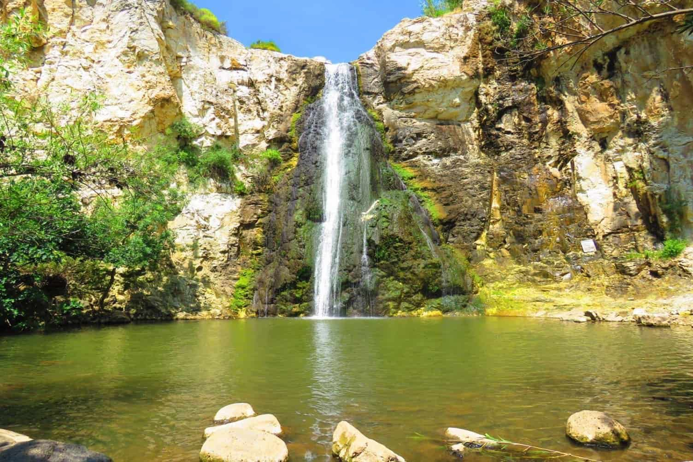

שמורת נחל אל על משתרעת על פני כ-3,000 דונם. נחל אל על העובר בשמורה הוא הדרומי שבנחלי האיתן בגולן. בעבר כינו תושבי הסביבה את חלקו העילי של הנחל בשם ואדי דופילה (בערבית: הרדוף) בשל ההרדופים הרבים הצומחים בסביבתו. נחל אל על מתחיל את דרכו ליד חנות אורחה (ח'אן ג'וחדר) ואורכו כ-20 ק"מ. לאחר כ-10 ק"מ הנחל "נעלם" במאגר בני ישראל ובצאתו ממנו ממשיך לזרום לדרום-מערב, יוצר את הקניון עם המפלים ואחר כך פונה צפונה ונשפך לנחל סמך.
בחניון יש מזנון (פתוח על פי תיאום מראש), ברזי מים ושירותים. מכאן נמשיך צפונה בשביל המסומן אדום לאורך גדר המושב עד לתחילת הירידה לערוץ העמוק של נחל אל על (ואדי דפילה בערבית). אם תקשיבו היטב אולי תוכלו לשמוע את להקת הזאבים הפרועים, החמורים, הצבועים, השועלים, דורבנים, לוטרות, נמיות ושפני סלע. כל אלו נמצאים בשמורה וכדי לראותם צריך לבוא בשעות החשיכה. האגדה מספרת גם על קיומו של דוב באזור.
בנקודת תחילת הירידה מומלץ לעשות תצפית. ניתן לראות החל מהחרמון בצפון ועד הכנרת, ניתן לראות גם את היישוב אלי-עד שבהמשך הנחל – המקום בו נסיים את הטיול שלנו.
הירידה עצמה לא פשוטה ויש להיזהר. לפני שמגיעים לערוץ הנחל נעבור בבוסתן שבימי הקיץ נמצא בו תאנים, רימונים, ענבים, עצי רימון , משוכות צבר תמרים ועוד. לאחר ההגעה לאפיק המרשים עולים מעט לגדה הצפונית (הימנית) וממשיכים בשביל המתפתל בין הצמחיה.
זו ההזדמנות לראות כי שכבת הסלע שאנו עומדים עליה עכשיו היא שכבת בזלת, הצעירה יחסית לשכבת הגיר (שנמצאת תחתיה) המוכרת ברוב חלקי הארץ. בעקבות לחצים בפני כדור הארץ והשבר הסורי אפריקאני, החרמון נדחף למעלה ובאזור רמת הגולן נוצר קער. בקער זה נוצרו לחצים געשיים והוא התמלא בזלת שזרמה מעשרות הרי געש. עד היום ניתן לראות את הרי געש אלה, המוכרים בשם התלים של רמת הגולן.
תחילת המסלול בחניון המפלים [1] שליד המושב הדתי אבני איתן. מכיוון שמדובר במושב דתי, ההגעה שונה ביום חול ובשבת או חג:
ביום חול: מצומת אפיק ממשיכים בכביש 98 לכיוון מגשימים עד לפניה לאבני איתן. ניתן להכנס עם הרכב עד לחניון המפלים, שממנו מתחיל השביל האדום היורד לנחל.
בשבת וחג: ניתן להגיע לחניון המפלים בדרך העוקפת את המושב: כ-100 מטר לפני הכניסה למושב פונים שמאלה לדרך עפר ונוסעים בה בהתאם לחצים על הצמיגים שבדרך עד חניון המפלים. אפשרות נוספת היא לחנות בשער הכניסה וללכת קצת יותר ברגל.